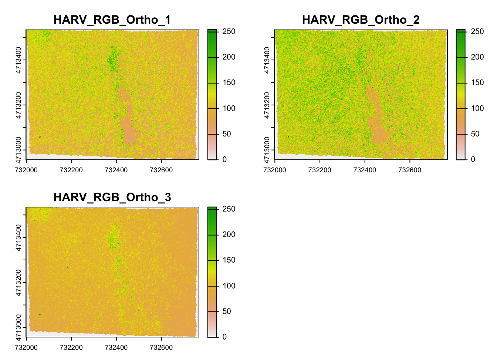

Chapter 1 Introduction to spatial data in R
Learning Objectives
- Create point, line, and polygon shapefiles as
spandsfobjects.- Read shapefiles into
spandsfobjects- Examine
spandsfobjects- Read GeoTiff single and multiband into a
rasterobject.- Examine
rasterobjects
1.1 Conceptualizing spatial vector objects in R
In vector GIS we deal with, points, lines, and polygons, like so:

Challenge
Discuss with your neighbor: What information do we need to store in order to define points, lines, polygons in geographic space?
There are currently two main approaches in R to handle geographic vector data:
1.1.1 The sp package
The first general package to provide classes and methods for spatial data types that was developed for R is called sp1. Development of the sp package began in the early 2000s in an attempt to standardize how spatial data would be treated in R and to allow for better interoperability between different analysis packages that use spatial data. The package (first release on CRAN in 2005) provides classes and methods to create points, lines, polygons, and grids and to operate on them. About 350 of the spatial analysis packages use the spatial data types that are implemented in sp i.e. they “depend” on the sp package and many more are indirectly dependent.
The foundational structure for any spatial object in sp is the Spatial class. It has two “slots” (new-style S4 class objects in R have pre-defined components called slots):
a bounding box
a CRS class object to define the Coordinate Reference System
This basic structure is then extended, depending on the characteristics of the spatial object (point, line, polygon).
To manually build up a spatial object in sp we could follow these steps:
I. Create geometric objects (topology)
Points (which may have 2 or 3 dimensions) are the most basic spatial data objects. They are generated out of either a single coordinate or a set of coordinates, like a two-column matrix or a dataframe with a column for latitude and one for longitude.
Lines are generated out of Line objects. A Line object is a spaghetti collection of 2D coordinates2 and is generated out of a two-column matrix or a dataframe with a column for latitude and one for longitude. A Lines object is a list of one or more Line objects, for example all the contours at a single elevation.
Polygons are generated out of Polygon objects. A Polygon object is a spaghetti collection of 2D coordinates with equal first and last coordinates and is generated out of a two-column matrix or a dataframe with a column for latitude and one for longitude. A Polygons object is a list of one or more Polygon objects, for example islands belonging to the same country.
II. Create spatial objects
Spatial*object (*stands for Points, Lines, or Polygons).
This step adds the bounding box (automatically) and the slot for the Coordinate Reference System or CRS (which needs to be filled with a value manually). SpatialPoints can be directly generated out of the coordinates. SpatialLines and SpatialPolygons objects are generated using lists of Lines or Polygons objects respectively (more below).
III. Add attributes (Optional:)
Add a data frame with attribute data, which will turn your Spatial* object into a Spatial*DataFrame object. The points in a SpatialPoints object may be associated with a row of attributes to create a SpatialPointsDataFrame object. The coordinates and attributes may, but do not have to be keyed to each other using ID values.
SpatialLinesDataFrame and SpatialPolygonsDataFrame objects are defined using SpatialLines and SpatialPolygons objects and data frames. The ID fields are here required to match the data frame row names.
If, for example we wanted to build up an sp Object that would contain highways we would do the following.
First we would create a Line object that holds one highway. We use a matrix with two columns of arbitrary numbers, for x and y coordinates.
ln1 <- Line(matrix(runif(6), ncol=2))
str(ln1)#> Formal class 'Line' [package "sp"] with 1 slot
#> ..@ coords: num [1:3, 1:2] 0.876 0.195 0.572 0.608 0.606 ...Note the @ coords slot which holds the coordinates.
Ok, let’s create another Line object for another highway:
ln2 <- Line(matrix(runif(6), ncol=2))Now we combine the two highways to a Lines object. Note how we add a unique ID for each highway. This step allows to combine generate multiple line strings, so we could add more lines under the same ID.
lns1 <- Lines(list(ln1), ID = c("hwy1"))
lns2 <- Lines(list(ln2), ID = c("hwy2"))
str(lns1)#> Formal class 'Lines' [package "sp"] with 2 slots
#> ..@ Lines:List of 1
#> .. ..$ :Formal class 'Line' [package "sp"] with 1 slot
#> .. .. .. ..@ coords: num [1:3, 1:2] 0.876 0.195 0.572 0.608 0.606 ...
#> ..@ ID : chr "hwy1"The Line objects are now in a list and we have an additional ID slot, which uniquely identifies each Line object.
Now we turn this into a geospatial object by creating a SpatialLines object:
sp_lns <- SpatialLines(list(lns1, lns2))
str(sp_lns)#> Formal class 'SpatialLines' [package "sp"] with 3 slots
#> ..@ lines :List of 2
#> .. ..$ :Formal class 'Lines' [package "sp"] with 2 slots
#> .. .. .. ..@ Lines:List of 1
#> .. .. .. .. ..$ :Formal class 'Line' [package "sp"] with 1 slot
#> .. .. .. .. .. .. ..@ coords: num [1:3, 1:2] 0.876 0.195 0.572 0.608 0.606 ...
#> .. .. .. ..@ ID : chr "hwy1"
#> .. ..$ :Formal class 'Lines' [package "sp"] with 2 slots
#> .. .. .. ..@ Lines:List of 1
#> .. .. .. .. ..$ :Formal class 'Line' [package "sp"] with 1 slot
#> .. .. .. .. .. .. ..@ coords: num [1:3, 1:2] 0.5703 0.0478 0.714 0.0805 0.0864 ...
#> .. .. .. ..@ ID : chr "hwy2"
#> ..@ bbox : num [1:2, 1:2] 0.0478 0.0805 0.8757 0.6081
#> .. ..- attr(*, "dimnames")=List of 2
#> .. .. ..$ : chr [1:2] "x" "y"
#> .. .. ..$ : chr [1:2] "min" "max"
#> ..@ proj4string:Formal class 'CRS' [package "sp"] with 1 slot
#> .. .. ..@ projargs: chr NANote how this adds the @ bbox with the bounding box coordinates and @ proj4string to hold the Coordinate Reference System - in our case NA as we have not assigned any projection.
Finally we create some attributes to each highway and create a SpatialLinesDataframe. The way we do this is that we create a regular data.frame and join it to the spatial object via the unique ID.
dfr <- data.frame(id = c("hwy1", "hwy2"), # note how we use the same IDs from above!
cars_per_hour = c(78, 22))
sp_lns_dfr <- SpatialLinesDataFrame(sp_lns, dfr, match.ID = "id")
str(sp_lns_dfr)#> Formal class 'SpatialLinesDataFrame' [package "sp"] with 4 slots
#> ..@ data :'data.frame': 2 obs. of 2 variables:
#> .. ..$ id : Factor w/ 2 levels "hwy1","hwy2": 1 2
#> .. ..$ cars_per_hour: num [1:2] 78 22
#> ..@ lines :List of 2
#> .. ..$ :Formal class 'Lines' [package "sp"] with 2 slots
#> .. .. .. ..@ Lines:List of 1
#> .. .. .. .. ..$ :Formal class 'Line' [package "sp"] with 1 slot
#> .. .. .. .. .. .. ..@ coords: num [1:3, 1:2] 0.876 0.195 0.572 0.608 0.606 ...
#> .. .. .. ..@ ID : chr "hwy1"
#> .. ..$ :Formal class 'Lines' [package "sp"] with 2 slots
#> .. .. .. ..@ Lines:List of 1
#> .. .. .. .. ..$ :Formal class 'Line' [package "sp"] with 1 slot
#> .. .. .. .. .. .. ..@ coords: num [1:3, 1:2] 0.5703 0.0478 0.714 0.0805 0.0864 ...
#> .. .. .. ..@ ID : chr "hwy2"
#> ..@ bbox : num [1:2, 1:2] 0.0478 0.0805 0.8757 0.6081
#> .. ..- attr(*, "dimnames")=List of 2
#> .. .. ..$ : chr [1:2] "x" "y"
#> .. .. ..$ : chr [1:2] "min" "max"
#> ..@ proj4string:Formal class 'CRS' [package "sp"] with 1 slot
#> .. .. ..@ projargs: chr NANote the additional @ data slot here, where we find the attribute information.
There are a number of spatial methods are available for the object classes in sp. Among the ones I use more frequently are:
| function | and what it does |
|---|---|
bbox() |
returns the bounding box coordinates |
proj4string() |
sets or retrieves projection attributes as object of the CRS class. |
CRS() |
creates an object of class of coordinate reference system arguments |
spplot() |
plots a separate map of all the attributes unless specified otherwise |
coordinates() |
set or retrieve the spatial coordinates. For spatial polygons it returns the centroids. |
over(a, b) |
used for example to retrieve the polygon or grid indices on a set of points |
spsample() |
sampling of spatial points within the spatial extent of objects |
1.1.2 The sf package
The second package, first released on CRAN in late October 2016, is called sf3. It implements a formal standard called “Simple Features” that specifies a storage and access model of spatial geometries (point, line, polygon). A feature geometry is called simple when it consists of points connected by straight line pieces, and does not intersect itself. This standard has been adopted widely, not only by spatial databases such as PostGIS, but also more recent standards such as GeoJSON.
If you work with PostGis or GeoJSON you may have come across the WKT (well-known text) format (Fig 1.1 and 1.2)

Figure 1.1: Well-Known-Text Geometry primitives (wikipedia)

Figure 1.2: Well-Known-Text Multipart geometries (wikipedia)
sf implements this standard natively in R. Data are structured and conceptualized very differently from the sp approach.
In sf spatial objects are stored as a simple data frame with a special column that contains the information for the geometry coordinates. That special column is a list with the same length as the number of rows in the data frame. Each of the individual list elements then can be of any length needed to hold the coordinates that correspond to an individual feature.
To create a spatial sf object manually the basic steps would be:
I. Create geometric objects (topology)
Geometric objects (simple features) can be created from a numeric vector, matrix or a list with the coordinates. They are called sfg objects for Simple Feature Geometry.b Similarly to sp there are functions that help create simple feature geometries, like st_point(), st_linestring(), st_polygon() and more.
II. Combine all individual single feature objects for the special column.
The feature geometries are then combined into a Simple Feature Collection with st_sfc(). which is nothing other than a simple feature geometry list-column. The sfc object also holds the bounding box and the projection information.
- Add attributes.
Lastly, we add the attributes to the the simple feature collection with the st_sf() function. This function extends the well known data frame in R with a column that holds the simple feature collection.
So if we created the same highway object from above as sf object we would first generate LINESTRINGs as simple feature geometries out of a matrix with coordinates:
lnstr_sfg1 <- st_linestring(matrix(runif(6), ncol=2))
lnstr_sfg2 <- st_linestring(matrix(runif(6), ncol=2))
class(lnstr_sfg1)#> [1] "XY" "LINESTRING" "sfg"We would then combine this into a simple feature collection :
(lnstr_sfc <- st_sfc(lnstr_sfg1, lnstr_sfg2)) # just one feature here#> Geometry set for 2 features
#> geometry type: LINESTRING
#> dimension: XY
#> bbox: xmin: 0.04102844 ymin: 0.2676338 xmax: 0.9185135 ymax: 0.7792707
#> epsg (SRID): NA
#> proj4string: NA#> LINESTRING (0.1994692 0.6058746, 0.4585503 0.31...#> LINESTRING (0.7090667 0.2778002, 0.6872457 0.77...And lastly use our data frame from above to generate the sf object:
(lnstr_sf <- st_sf(dfr , lnstr_sfc))#> Simple feature collection with 2 features and 2 fields
#> geometry type: LINESTRING
#> dimension: XY
#> bbox: xmin: 0.04102844 ymin: 0.2676338 xmax: 0.9185135 ymax: 0.7792707
#> epsg (SRID): NA
#> proj4string: NA
#> id cars_per_hour lnstr_sfc
#> 1 hwy1 78 LINESTRING (0.1994692 0.605...
#> 2 hwy2 22 LINESTRING (0.7090667 0.277...There are many methods available in the sf package, to find out use
methods(class="sf")#> [1] [ [[<- $<-
#> [4] aggregate as.data.frame cbind
#> [7] coerce dbDataType dbWriteTable
#> [10] extent extract identify
#> [13] initialize mask merge
#> [16] plot print raster
#> [19] rasterize rbind show
#> [22] slotsFromS3 st_agr st_agr<-
#> [25] st_area st_as_sf st_bbox
#> [28] st_boundary st_buffer st_cast
#> [31] st_centroid st_collection_extract st_convex_hull
#> [34] st_coordinates st_crop st_crs
#> [37] st_crs<- st_difference st_geometry
#> [40] st_geometry<- st_intersection st_is
#> [43] st_line_merge st_nearest_points st_node
#> [46] st_point_on_surface st_polygonize st_precision
#> [49] st_segmentize st_set_precision st_simplify
#> [52] st_snap st_sym_difference st_transform
#> [55] st_triangulate st_union st_voronoi
#> [58] st_wrap_dateline st_write st_zm
#> see '?methods' for accessing help and source codeHere are some of the other highlights of sf you might be interested in:
provides fast I/O, particularly relevant for large files
- spatial fuctions that rely on GEOS and GDAL and PROJ external libraries are directluy linked into the package, so no need to load additional external packages (like in
sp)
sfobjects can be plotted directly withggplotsfdirectly reads from and writes to spatial databases such as PostGISsfis compatible with thetidyvderseapproach, (but see some pitfalls here)
Note that sp and sf are not the only way spatial objects are conceptualized in R. Other spatial packages may use their own class definitions for spatial data (for example spatstat).
There are packages specifically for the GeoJSON and for that reason are more lightweight, for example:
Usuallly you can find functions that convert objects to and from these formats.
Challenge
Similarly to the example above generate a Point object in R. Use both, the
spand thesf“approach”.
- Create a matrix
ptsof random numbers with two columns and as many rows as you like. These are your points.- Create a dataframe
attrib_dfwith the same number of rows as yourptsmatrix and a column that holds an attribute. You can make up any attribute.- Use the appropriate commands and
ptsto create
- a
SpatialPointsDataFrameand- an
sfobject with a gemoetry column of classsfc_POINT.
- Try to subset your spatial object using the attribute you have added and the way you are used to from regular data frames.
- How do you determine the bounding box of your spatial object?
1.2 Creating a spatial object from a lat/lon table
Often in your research might have a spreadsheet that contains latitude, longitude and perhaps some attribute values. You know how to read the spreadsheet into a data frame with read.table or read.csv. We can then very easily convert the table into a spatial object in R.
1.2.1 With sf
An sf object can be created from a data frame in the following way. We take advantage of the st_as_sf() function which converts any foreign object into an sf object. Similarly to above, it requires an argument coords, which in the case of point data needs to be a vector that specifies the data frame’s columns for the longitude and latitude (x,y) coordinates.
my_sf_object <- st_as_sf(myDataframe, coords)st_as_sf() creates a new object and leaves the original data frame untouched.
We use read.csv() to read philly_homicides.csv into a dataframe in R and name it philly_homicides_df.
philly_homicides_df <- read.csv("data/philly_homicides.csv")
str(philly_homicides_df )#> 'data.frame': 3883 obs. of 10 variables:
#> $ DC_DIST : int 22 1 1 1 1 1 1 1 1 1 ...
#> $ SECTOR : Factor w/ 30 levels "1","2","3","4",..: 1 6 6 6 9 10 6 14 14 5 ...
#> $ DISPATCH_DATE : Factor w/ 2228 levels "2006-01-01","2006-01-02",..: 2139 10 62 90 125 132 133 139 199 211 ...
#> $ DISPATCH_TIME : Factor w/ 1263 levels "00:00:00","00:01:00",..: 799 1 804 561 633 981 1224 86 1063 1013 ...
#> $ LOCATION_BLOCK : Factor w/ 3305 levels " 100 E CHAMPLOST AVE",..: 595 745 3135 806 828 588 579 853 883 625 ...
#> $ UCR_GENERAL : int 100 100 100 100 100 100 100 100 100 100 ...
#> $ OBJ_ID : int 1 1 1 1 1 1 1 1 1 1 ...
#> $ TEXT_GENERAL_CODE: Factor w/ 4 levels "Homicide - Criminal",..: 1 1 1 1 1 2 1 1 1 1 ...
#> $ POINT_X : num -75.2 -75.2 -75.2 -75.2 -75.2 ...
#> $ POINT_Y : num 40 39.9 39.9 39.9 39.9 ...We convert the philly_homicides_df data frame into an sf object with st_as_sf()
philly_homicides_sf <- st_as_sf(philly_homicides_df, coords = c("POINT_X", "POINT_Y"))
str(philly_homicides_sf)#> Classes 'sf' and 'data.frame': 3883 obs. of 9 variables:
#> $ DC_DIST : int 22 1 1 1 1 1 1 1 1 1 ...
#> $ SECTOR : Factor w/ 30 levels "1","2","3","4",..: 1 6 6 6 9 10 6 14 14 5 ...
#> $ DISPATCH_DATE : Factor w/ 2228 levels "2006-01-01","2006-01-02",..: 2139 10 62 90 125 132 133 139 199 211 ...
#> $ DISPATCH_TIME : Factor w/ 1263 levels "00:00:00","00:01:00",..: 799 1 804 561 633 981 1224 86 1063 1013 ...
#> $ LOCATION_BLOCK : Factor w/ 3305 levels " 100 E CHAMPLOST AVE",..: 595 745 3135 806 828 588 579 853 883 625 ...
#> $ UCR_GENERAL : int 100 100 100 100 100 100 100 100 100 100 ...
#> $ OBJ_ID : int 1 1 1 1 1 1 1 1 1 1 ...
#> $ TEXT_GENERAL_CODE: Factor w/ 4 levels "Homicide - Criminal",..: 1 1 1 1 1 2 1 1 1 1 ...
#> $ geometry :sfc_POINT of length 3883; first list element: 'XY' num -75.2 40
#> - attr(*, "sf_column")= chr "geometry"
#> - attr(*, "agr")= Factor w/ 3 levels "constant","aggregate",..: NA NA NA NA NA NA NA NA
#> ..- attr(*, "names")= chr "DC_DIST" "SECTOR" "DISPATCH_DATE" "DISPATCH_TIME" ...Note the additional geometry list-column which now holds the simple feature collection with the coordinates of all the points.
To make it a complete geographical object we assign the WGS84 projection, which has the EPSG code 4326:
st_crs(philly_homicides_sf)#> Coordinate Reference System: NAst_crs(philly_homicides_sf) <- 4326 # we can use EPSG as numeric here
st_crs(philly_homicides_sf)#> Coordinate Reference System:
#> EPSG: 4326
#> proj4string: "+proj=longlat +datum=WGS84 +no_defs"We will save this object as a shapefile on our hard drive for later use. (Note that by default st_write checks if the file already exists, and if so it will not overwrite it. If you need to force it to overwrite use the option delete_layer = TRUE.)
st_write(philly_homicides_sf, "data/PhillyHomicides", driver = "ESRI Shapefile")
# to force the save:
st_write(philly_homicides_sf, "data/PhillyHomicides", driver = "ESRI Shapefile", delete_layer = TRUE)1.2.2 With sp
A SpatialPointsDataFrame object can be created directly from a table by specifying which columns contain the coordinates. This can be done in one step by using the coordinates() function. As mentioned above this function can be used not only to retrieve spatial coordinates but also to set them, which is done in R fashion with:
coordinates(myDataframe) <- valuevalue can have different forms – in this context needs to be a character vector which specifies the data frame’s columns for the longitude and latitude (x,y) coordinates.
If we use this on a data frame it automatically converts the data frame object into a SpatialPointsDataFrame object.
Below, we convert the philly_homicides_df data frame into a spatial object with using the coordinates function and check with class(philly_homicides_df)again to examine which object class the table belongs to now. Note that the coordinates() function if used in this way replaces the original data frame.
coordinates(philly_homicides_df) <- c("POINT_X", "POINT_Y")
class(philly_homicides_df) # !! #> [1] "SpatialPointsDataFrame"
#> attr(,"package")
#> [1] "sp"Assigning the projection:
is.projected(philly_homicides_df) # see if a projection is defined #> [1] NAproj4string(philly_homicides_df) <- CRS("+init=epsg:4326") # this is WGS84
is.projected(philly_homicides_df) # voila! hm. wait a minute..#> [1] FALSETo save the sp object out as a shapefile we need to load another library, called rgdal (more on this below.)
# to save out using writeOGR from rgdal
library(rgdal)
# note that we need to save the philly_homicides_df, which we converted to sp object!
writeOGR(philly_homicides_df, "data/PhillyHomicides", "PhillyHomcides", driver = "ESRI Shapefile")
# to force save:
writeOGR(philly_homicides_df, "data/PhillyHomicides", "PhillyHomcides", driver = "ESRI Shapefile", overwrite_layer = TRUE)1.3 Loading shape files into R
1.3.1 How to do this in sf
sf relies on the powerful GDAL library, which is automatically linked in when loading sf. We can use st_read(), which simply takes the path of the directory with the shapefile as argument.
# read in
philly_sf <- st_read("data/Philly/")#> Reading layer `PhillyTotalPopHHinc' from data source `/Users/cengel/Anthro/R_Class/R_Workshops/R-spatial/data/Philly' using driver `ESRI Shapefile'
#> Simple feature collection with 384 features and 17 fields
#> geometry type: MULTIPOLYGON
#> dimension: XY
#> bbox: xmin: 1739497 ymin: 457343.7 xmax: 1764030 ymax: 490544.9
#> epsg (SRID): NA
#> proj4string: +proj=aea +lat_1=29.5 +lat_2=45.5 +lat_0=37.5 +lon_0=-96 +x_0=0 +y_0=0 +ellps=GRS80 +units=m +no_defs# take a look at what we've got
str(philly_sf) # note again the geometry column#> Classes 'sf' and 'data.frame': 384 obs. of 18 variables:
#> $ STATEFP10 : Factor w/ 1 level "42": 1 1 1 1 1 1 1 1 1 1 ...
#> $ COUNTYFP10: Factor w/ 1 level "101": 1 1 1 1 1 1 1 1 1 1 ...
#> $ TRACTCE10 : Factor w/ 384 levels "000100","000200",..: 347 350 353 329 326 345 46 82 173 15 ...
#> $ GEOID10 : Factor w/ 384 levels "42101000100",..: 347 350 353 329 326 345 46 82 173 15 ...
#> $ NAME10 : Factor w/ 384 levels "1","10.01","10.02",..: 281 284 287 262 259 279 299 354 86 3 ...
#> $ NAMELSAD10: Factor w/ 384 levels "Census Tract 1",..: 281 284 287 262 259 279 299 354 86 3 ...
#> $ MTFCC10 : Factor w/ 1 level "G5020": 1 1 1 1 1 1 1 1 1 1 ...
#> $ FUNCSTAT10: Factor w/ 1 level "S": 1 1 1 1 1 1 1 1 1 1 ...
#> $ ALAND10 : num 2322732 4501110 1004313 1271533 1016206 ...
#> $ AWATER10 : num 66075 8014 1426278 8021 0 ...
#> $ INTPTLAT10: Factor w/ 384 levels "+39.8798897",..: 369 380 68 333 325 368 16 93 188 63 ...
#> $ INTPTLON10: Factor w/ 384 levels "-074.9667387",..: 1 5 137 14 27 4 272 367 119 147 ...
#> $ GISJOIN : Factor w/ 384 levels "G4201010000100",..: 347 350 353 329 326 345 46 82 173 15 ...
#> $ Shape_area: num 2388806 4509124 2430591 1279556 1016207 ...
#> $ Shape_len : num 6851 10567 9257 4928 5920 ...
#> $ medHHinc : num 54569 NA 130139 56667 69981 ...
#> $ totalPop : num 3695 703 1643 4390 3807 ...
#> $ geometry :sfc_MULTIPOLYGON of length 384; first list element: List of 1
#> ..$ :List of 1
#> .. ..$ : num [1:55, 1:2] 1763647 1763473 1763366 1763378 1763321 ...
#> ..- attr(*, "class")= chr "XY" "MULTIPOLYGON" "sfg"
#> - attr(*, "sf_column")= chr "geometry"
#> - attr(*, "agr")= Factor w/ 3 levels "constant","aggregate",..: NA NA NA NA NA NA NA NA NA NA ...
#> ..- attr(*, "names")= chr "STATEFP10" "COUNTYFP10" "TRACTCE10" "GEOID10" ...Two more words about the geometry column: You can name this column any way you wish. Secondly, you can remove this column and revert to a regular, non-spatial data frame at any dime wiht st_drop_geometry().
The default plot of an sf object is a multi-plot of the first attributes, with a warning if not all can be plotted:
plot(philly_sf)#> Warning: plotting the first 10 out of 17 attributes; use max.plot = 17 to
#> plot allIn order to only plot the polygon boundaries we need to directly use the geometry column. We use the st_geometry() function to extract it:
plot(st_geometry(philly_sf))Let’s add a subset of polygons with only the census tracts where the median houshold income is more than $60,000. We can extract elements from an sf object based on attributes using your prefered method of subsetting data frames.
# subset the familar way
philly_sf_rich <- philly_sf[philly_sf$medHHinc > 60000, ]
# or
philly_sf_rich <- subset(philly_sf, medHHinc > 60000)
plot(st_geometry(philly_sf_rich), add=T, col="red")
Piping works as well!
library(dplyr)
philly_sf %>%
filter(medHHinc > 60000) %>%
st_geometry() %>%
plot(col="red", add=T)1.3.2 How to work with rgdal and sp
In order to read spatial data into R and turn them into Spatial* family objects we require the rgdal package, which provides bindings to GDAL4.
We can read in and write out spatial data using:
readOGR() and writeOGR() (for vector)
readGDAL() and writeGDAL() (for raster/grids)The parameters provided for each function vary depending on the exact spatial file type you are reading. We will take an ESRI shapefile as an example. A shapefile - as you know - consists of various files of the same name, but with different extensions. They should all be in one directory and that is what R expects.
When reading in a shapefile, readOGR() requires the following two arguments:
datasource name (dsn) # the path to the folder that contains the files
# this is a path to the folder, not a filename!
layer name (layer) # the shapefile name WITHOUT extension
# this is not a path but just the name of the file!Setting these arguments correctly can be cause of much headache for beginners, so let me spell it out:
Firstly, you obviously need to know the name of shapefile.
Secondly, you need to know the name and location of the folder that contains all the shapefile parts.
Lastly,
readOGRonly reads the file and dumps it on your screen. But similarly when reading csv tables you want to actually work with the file, so you need to assign it to an R object.
Now let’s do this.
We load the rgdal package and read PhillyTotalPopHHinc into an object called philly by using the readOGR function5. We can also examine the object and confirm what it is with class().
library(rgdal)
philly_sp <- readOGR("data/Philly/", "PhillyTotalPopHHinc") #> OGR data source with driver: ESRI Shapefile
#> Source: "/Users/cengel/Anthro/R_Class/R_Workshops/R-spatial/data/Philly", layer: "PhillyTotalPopHHinc"
#> with 384 features
#> It has 17 fieldsclass(philly_sp)#> [1] "SpatialPolygonsDataFrame"
#> attr(,"package")
#> [1] "sp"Very similarly to the above we can create a simple plot of the polygons with the plot command, which directly understands the SpatialPolygonsDatafame object and then plot a subset of polygons with a median household income (medHHinc) of over $60,000 on top of the plot of the entire city.
plot(philly_sp)
philly_sp_rich <- subset(philly_sp, medHHinc > 60000)
plot(philly_sp_rich, add=T, col="red")1.4 Raster data in R
Raster files, as you might know, have a much more compact data structure than vectors. Because of their regular structure the coordinates do not need to be recorded for each pixel or cell in the rectangular extent. A raster is defined by:
- a CRS
- coordinates of its origin
- a distance or cell size in each direction
- a dimension or numbers of cells in each direction
- an array of cell values
Given this structure, coordinates for any cell can be computed and don’t need to be stored.
The raster package6 is a major extension of spatial data classes to access large rasters and in particular to process very large files. It includes object classes for RasterLayer, RasterStacks, and RasterBricks, functions for converting among these classes, and operators for computations on the raster data. Conversion from sp type objects into raster type objects is possible.
If we wanted to do create a raster object from scratch we would do the following:
# specify the RasterLayer with the following parameters:
# - minimum x coordinate (left border)
# - minimum y coordinate (bottom border)
# - maximum x coordinate (right border)
# - maximum y coordinate (top border)
# - resolution (cell size) in each dimension
r <- raster(xmn=-0.5, ymn=-0.5, xmx=4.5, ymx=4.5, resolution=c(1,1))
r#> class : RasterLayer
#> dimensions : 5, 5, 25 (nrow, ncol, ncell)
#> resolution : 1, 1 (x, y)
#> extent : -0.5, 4.5, -0.5, 4.5 (xmin, xmax, ymin, ymax)
#> coord. ref. : +proj=longlat +datum=WGS84 +ellps=WGS84 +towgs84=0,0,0Note that this raster object has a CRS defined! If the crs argument is missing when creating the Raster object, the x coordinates are within -360 and 360 and the y coordinates are within -90 and 90, the WGS84 projection is used by default!
Good to know.
To add some values to the cells we could the following.
class(r)#> [1] "RasterLayer"
#> attr(,"package")
#> [1] "raster"r <- setValues(r, runif(25))
class(r)#> [1] "RasterLayer"
#> attr(,"package")
#> [1] "raster"plot(r); points(coordinates(r), pch=3)
(See the rasterVis package for more advanced plotting of Raster* objects.)
RasterLayer objects can also be created from a matrix.
class(volcano)#> [1] "matrix"volcano.r <- raster(volcano)
class(volcano.r)#> [1] "RasterLayer"
#> attr(,"package")
#> [1] "raster"And to read in a raster file we can use the raster() function. This raster is generated as part of the NEON Harvard Forest field site.
library(raster)
HARV <- raster("data/HARV_RGB_Ortho.tif")Typing the name of the object will give us what’s in there:
HARV#> class : RasterLayer
#> band : 1 (of 3 bands)
#> dimensions : 2317, 3073, 7120141 (nrow, ncol, ncell)
#> resolution : 0.25, 0.25 (x, y)
#> extent : 731998.5, 732766.8, 4712956, 4713536 (xmin, xmax, ymin, ymax)
#> coord. ref. : +proj=utm +zone=18 +datum=WGS84 +units=m +no_defs +ellps=WGS84 +towgs84=0,0,0
#> data source : /Users/cengel/Anthro/R_Class/R_Workshops/R-spatial/data/HARV_RGB_Ortho.tif
#> names : HARV_RGB_Ortho
#> values : 0, 255 (min, max)We can plot it like this:
plot(HARV)
We can find out about the Coordinate Reference System with this:
crs(HARV)#> CRS arguments:
#> +proj=utm +zone=18 +datum=WGS84 +units=m +no_defs +ellps=WGS84
#> +towgs84=0,0,0See what you can do with such an object:
methods(class=class(HARV))#> [1] ! != [ [[
#> [5] [<- %in% == $
#> [9] $<- addLayer adjacent aggregate
#> [13] all.equal area Arith as.array
#> [17] as.character as.data.frame as.factor as.integer
#> [21] as.list as.logical as.matrix as.raster
#> [25] as.vector asFactor atan2 bandnr
#> [29] barplot bbox boundaries boxplot
#> [33] brick buffer calc cellFromRowCol
#> [37] cellFromXY cellStats clamp click
#> [41] clump coerce colFromCell colFromX
#> [45] colSums Compare contour coordinates
#> [49] corLocal cover crop crosstab
#> [53] crs<- cut cv density
#> [57] dim dim<- direction disaggregate
#> [61] distance extend extent extract
#> [65] flip focal freq getValues
#> [69] getValuesBlock getValuesFocal gridDistance head
#> [73] hist image interpolate intersect
#> [77] is.factor is.finite is.infinite is.na
#> [81] is.nan isLonLat KML labels
#> [85] layerize length levels levels<-
#> [89] lines localFun log Logic
#> [93] mask match Math Math2
#> [97] maxValue mean merge minValue
#> [101] modal mosaic names names<-
#> [105] ncell ncol ncol<- nlayers
#> [109] nrow nrow<- origin origin<-
#> [113] overlay persp plot predict
#> [117] print proj4string proj4string<- quantile
#> [121] raster rasterize readAll readStart
#> [125] readStop reclassify res resample
#> [129] RGB rotate rowColFromCell rowFromCell
#> [133] rowFromY rowSums sampleRandom sampleRegular
#> [137] sampleStratified scale select setMinMax
#> [141] setValues shift show spplot
#> [145] stack stackSelect subs subset
#> [149] Summary summary t tail
#> [153] text trim unique update
#> [157] values values<- Which which.max
#> [161] which.min writeRaster writeStart writeStop
#> [165] writeValues xFromCell xFromCol xmax
#> [169] xmin xres xyFromCell yFromCell
#> [173] yFromRow ymax ymin yres
#> [177] zonal zoom
#> see '?methods' for accessing help and source codeWe can explore the distribution of values contained within our raster using the hist() function which produces a histogram. Histograms are often useful in identifying outliers and bad data values in our raster data.
hist(HARV)#> Warning in .hist1(x, maxpixels = maxpixels, main = main, plot = plot, ...):
#> 1% of the raster cells were used. 100000 values used.
Notice that a warning message is produced when R creates the histogram.
This warning is caused by the default maximum pixels value of 100,000 associated with the hist function. This maximum value is to ensure processing efficiency as our data become larger! We can force the hist function to use all cell values.
ncell(HARV)#> [1] 7120141hist(HARV, maxpixels = ncell(HARV))
At times it may be useful to explore raster metadata before loading them into R. This can be done with:
GDALinfo("path-to-raster-here") A raster dataset can contain one or more bands. We can view the number of bands in a raster using the nlayers() function.
nlayers(HARV)#> [1] 1We can use the raster() function to import one single band from a single OR from a multi-band raster. For multi-band raster, we can specify which band we want to read in.
HARV_Band2 <- raster("data/HARV_RGB_Ortho.tif", band = 2)
plot(HARV_Band2)
To bring in all bands of a multi-band raster, we use the stack() function.
HARV_stack <- stack("data/HARV_RGB_Ortho.tif")
# how many layers?
nlayers(HARV_stack)#> [1] 3# view attributes of stack object
HARV_stack#> class : RasterStack
#> dimensions : 2317, 3073, 7120141, 3 (nrow, ncol, ncell, nlayers)
#> resolution : 0.25, 0.25 (x, y)
#> extent : 731998.5, 732766.8, 4712956, 4713536 (xmin, xmax, ymin, ymax)
#> coord. ref. : +proj=utm +zone=18 +datum=WGS84 +units=m +no_defs +ellps=WGS84 +towgs84=0,0,0
#> names : HARV_RGB_Ortho.1, HARV_RGB_Ortho.2, HARV_RGB_Ortho.3
#> min values : 0, 0, 0
#> max values : 255, 255, 255What happens when we plot?
plot(HARV_stack)
If we know that it is an RGB multiband raster we can plot them all in one
plotRGB(HARV_stack)
1.4.1 RasterStack vs RasterBrick
The R RasterStack and RasterBrick object types can both store multiple bands. However, how they store each band is different. The bands in a RasterStack are stored as links to raster data that is located somewhere on our computer. A RasterBrick contains all of the objects stored within the actual R object. Since in the RasterBrick, all of the bands are stored within the actual object its object size is much larger than the RasterStack object.
In most cases, we can work with a RasterBrick in the same way we might work with a RasterStack. However, a RasterBrick is often more efficient and faster to process - which is important when working with larger files.
We can turn a RasterStack into a RasterBrick in R by using brick(StackName). Use the object.size() function to compare stack and brick R objects.
object.size(HARV_stack)#> 44248 bytesHARV_brick <- brick(HARV_stack)
object.size(HARV_brick)#> 170897168 bytesGoing back to the sp package, a simple grid can be built like this:
# specify the grid topology with the following parameters:
# - the smallest coordinates for each dimension, here: 0,0
# - cell size in each dimension, here: 1,1
# - number of cells in each dimension, here: 5,5
gtopo <- GridTopology(c(0,0), c(1,1), c(5,5)) # create the grid
datafr <- data.frame(runif(25)) # make up some data
SpGdf <- SpatialGridDataFrame(gtopo, datafr) # create the grid data frame
summary(SpGdf)#> Object of class SpatialGridDataFrame
#> Coordinates:
#> min max
#> [1,] -0.5 4.5
#> [2,] -0.5 4.5
#> Is projected: NA
#> proj4string : [NA]
#> Grid attributes:
#> cellcentre.offset cellsize cells.dim
#> 1 0 1 5
#> 2 0 1 5
#> Data attributes:
#> runif.25.
#> Min. :0.005639
#> 1st Qu.:0.258501
#> Median :0.472664
#> Mean :0.503794
#> 3rd Qu.:0.816009
#> Max. :0.996774R Bivand (2011) Introduction to representing spatial objects in R↩
Coordinates should be of type double and will be promoted if not.↩
E. Pebesma & R. Bivand (2016)Spatial data in R: simple features and future perspectives↩
GDAL supports over 200 raster formats and vector formats. Use
ogrDrivers()andgdalDrivers()(without arguments) to find out which formats yourrgdalinstall can handle.↩Unlike read.csv readOGR does not understand the
~as valid element of a path. This (on Mac) will not work:philly_sp <- readOGR("~/Desktop/data/Philly/", "PhillyTotalPopHHinc")↩Note that
spalso allows to work with raster structures. TheGridTopologyclass is the key element of raster representations. It contains: (a) the center coordinate pair of the south-west raster cell, (b) the two cell sizes in the metric of the coordinates, giving the step to successive centres, and (c) the numbers of cells for each dimension. There is also aSpatialPixelsobject which stores grid topology and coordinates of the actual points.↩